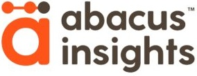
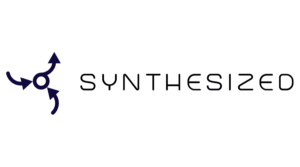
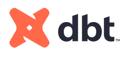
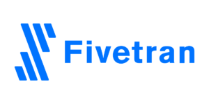

Databricks delivery
Lakehouse architecture, Unity Catalog, Delta Live Tables and Workflows — shipping production-grade CI/CD from day one.
- Lakehouse design & build
- Unity Catalog & governance
- DLT, Workflows, observability
150+ production engagements across data engineering, migrations, AI/ML, Generative AI and Databricks Apps. Every engagement led by Resident Solution Architects — not a bench, not a rotation, not a junior learning on your data.
0
Production Databricks engagements delivered across healthcare, financial services, retail and SaaS — engineering, migrations, AI/ML and Generative AI.




We've deliberately focused on Databricks and gone deep. Every engagement starts with a two-week scoping sprint — you see the plan, the team, and the price before you commit.
Lakehouse architecture, Unity Catalog, Delta Live Tables and Workflows — shipping production-grade CI/CD from day one.
Scalable ETL/ELT on Spark, Delta Lake and Lakeflow. Medallion architecture for batch and streaming workloads.
Off Teradata, Oracle, SQL Server, Hadoop or legacy Spark onto Databricks — migrations that ship in slices, never a big-bang flip.
First model to monitored, governed production — MLflow, feature stores, drift detection, with a bias toward simple models that actually ship.
Governed RAG, agentic workflows, and LLM applications on Databricks. Every answer grounded in your lakehouse, with auditability and cost controls.
Custom ANTLR-based rule engines, data grading, Unity Catalog governance, HIPAA & GDPR compliance — the work that won us our healthcare reputation.
When overnight batch isn't enough: Kafka, Structured Streaming and Delta Live Tables with exactly-once guarantees and runbooks your team can actually run.
A dedicated product-UI team in Brazil builds Databricks-native applications on top of your lakehouse — internal tools, operator consoles, governed self-service.
Certified Databricks engineers for short or long-term engagements. Plus certification prep, custom workshops and structured knowledge transfer programs.
We built an ANTLR grammar engine on Spark and Delta Lake for Abacus Insights to drive data usability for health plans through simplified data quality enforcement.
We've spent the last several years going deep on one platform instead of spreading thin across five. The lakehouse doesn't live in a vacuum — we're fluent in the clouds, tools and patterns that surround it.
We ship lakehouses the way Databricks intended — Unity Catalog, Delta Live Tables, Workflows, structured streaming, MLflow — with production-grade CI/CD from day one. Every engineer on your project has shipped production Databricks workloads before.
Databricks on AWS inside your VPC with least-privilege IAM and full CloudTrail audit. S3, Glue, Lake Formation, MSK for Kafka, SageMaker where it's the right tool for the job.
Azure Databricks, ADLS Gen2, Event Hubs and Power BI — wired together with Entra ID and proper tenant isolation. Fabric migrations into Azure Databricks where it's the smarter path.
dbt Core and dbt Cloud on Databricks with opinionated structure, tests, docs and CI. If your dbt project has turned into a 1,200-model tangle, we've seen it before and we know how to untangle it.
Kafka, Confluent, Kinesis, Structured Streaming and Delta Live Tables. We pick the right primitive for the workload — never dragging in kit the team won't be able to operate.
Open table format for the lakehouse. We design medallion architectures that exploit Delta's ACID guarantees, time travel, schema evolution and change data feeds.
Semantic models, governed datasets, and dashboard frameworks that read straight from the lakehouse — no extraction layer, no stale cubes, no nightly refresh fire drills.
A Databricks-native execution layer. Ontology-driven. Deterministic. ABAC governance injected at compile time. Pre-execution risk and cost controls on every query before a single DBU is consumed.
Eight deterministic pipeline stages. 50+ API endpoints. 10 production screens. Built by BeesBridge. Powered by Databricks. Governed by design.
A semantic compiler, not a copilot. AI is the front door — execution is deterministic, ontology-driven, and governed by contract.
Every query is validated, planned, and governed through the ontology. No black-box prompts.
AI is the front door — execution is compiler-driven. Predictable, repeatable, auditable.
Classification hierarchy, mask functions, RLS predicates — injected before compute is consumed.
Supply chain, healthcare, QRA, payment integrity, accounting — adding a domain is configuration.
Risk scoring, cost estimation, nine configurable guardrails — evaluated on every query.
Point at any catalog schema — auto-detect entities, attributes, relationships, sensitivity. Review, approve, activate.
NL to structured intent via Databricks Genie.
Check entities, fields and joins against live ontology.
Build inspectable execution plan from the ontology graph.
Risk-assess across 6 heuristic dimensions.
Project scan rows, data volume, DBU cost, runtime.
Nine guardrails: PASS, WARN, or BLOCK.
ABAC: CLS, RLS, tenant isolation at compile time.
Spark SQL on your warehouse; full audit trace returned.
We've built an internal scaffolding toolkit — codename bees-dbx — that produces a production-ready BeesBridge Databricks app workspace in about five minutes. Skills declare the conventions. An MCP server makes them callable. A studio gives engineers a visual surface on top.
Engineers spend the recovered week shipping features instead of yak-shaving project skeletons. It's not public — it's how every BeesBridge engagement starts. And it keeps growing: every engagement we run feeds new patterns, tools and conventions back into the toolkit. What ships today is a snapshot, not a ceiling.
Four SKILL.md files encode the BeesBridge way of structuring Databricks apps — bootstrap, builder, services, UI. Each one ships templates, scripts and reference docs.
The skills exposed as a Model Context Protocol server — 11 tools, 4 resources, 6 prompts. Reachable from Claude Code, Claude Desktop, Cursor, and our studio.
A local web UI on top of the MCP server. Chat on the left, activity timeline + files + notes on the right. Slash menu for the pre-canned workflows. One continuous conversation from zero to deployable app.
React + Vite + TypeScript front end, Flask backend that proxies /api/* to services. Deployed as a Databricks App.
Flask + gunicorn API with Swagger UI. Optional Lakebase Postgres. Optional auto-install of the builder wheel from Unity Catalog volumes. Deployed as a Databricks App.
Medium · business logicPython wheel with pyproject.toml (uv + hatchling) and a databricks.yml with dev/test/prod targets. Deployed as a Databricks Job via Asset Bundles.
What you see above is a snapshot of where the toolkit stands today. Every BeesBridge engagement is a forcing function — new patterns, new tools, new conventions get folded back in. Recent additions: ABAC governance hooks, Lakebase support, MCP resource sharing, automated GitHub secrets sync. Tomorrow's engagements will add more.
End-to-end professional services automation: resources, time, POs, invoicing, contractor payments, analytics — and an AI assistant that already knows your data.
A 30-minute demo — bring your spreadsheets, leave with a working dashboard.
Quotes from the data and engineering leaders we've built for — at Abacus Insights, IQVIA and HealthVerity.
I would highly recommend Beesbridge, a data engineering firm that specializes in building scalable, high-performance data infrastructure. They have a proven track record of delivering innovative solutions that enable businesses to unlock the full potential of their data. They helped us implement Next Generation Architecture for Delta Lake using Databricks running on both AWS and Azure, and we were extremely pleased with the results.
It has been a pleasure to work with Beesbridge LLC on a number of large-scale data initiatives for healthcare applications. They specialize in optimizing both performance and costs for petabyte-scale workloads. You bring the Beesbridge team in when you face complex, multimodal data challenges and want to demonstrate value to demanding business stakeholders. They are consummate consulting professionals — they attack problems, iterate quickly, remain flexible, and keep communication open.
HealthVerity is currently in month 5 of replatforming our data systems with Beesbridge. With only 5 people on the team, Beesbridge is making impressive progress. Performance tests show AWS cost cuts up to 10× — a huge win. The team is result-oriented, delivering best-of-art engineering: fully automated resilient pipelines, event-driven orchestration, PII masking, ML-based mapping. Highly recommend this team!
Three engagements, three different problems, three concrete numbers. Names are public with permission; the numbers come from our customers' own statements.
HealthVerity needed to replatform their existing data systems by year-end — an aggressive deadline most vendors said couldn't be hit.
Fully automated, resilient pipelines · metadata-driven configuration · event-driven orchestration · staging file stream chunking · automated infrastructure with exfiltration · PII masking and data lineage · ML-based mapping of incoming files.
MVP shipped on time. Performance testing confirmed up to 10× AWS cost reduction. Databricks best practices applied throughout.
Abacus needed an ANTLR-based, scalable data quality engine that could enforce rules on healthcare data at the lakehouse level — across two clouds.
Next-gen Delta Lake architecture · Databricks on AWS and Azure · ANTLR grammar engine on Spark · automated data quality framework · data grading for health plans · Unity Catalog governance.
Production framework now driving data usability for health plans. Work was featured by Databricks on the official engineering blog as a reference customer story.
IQVIA needed to optimize performance and cost on petabyte-scale workloads across Snowflake, Databricks, Hadoop, Elasticsearch, MongoDB and Solr — and demonstrate value fast to internal stakeholders.
Cost-driver analysis across pipelines · troubleshooting and refactoring existing workloads · platform-appropriate primitives instead of one-size-fits-all · iterative problem solving with open communication.
"Near-immediate return on consulting dollar investment." Multi-engagement relationship across multiple data initiatives.
An "AI Enabled Blackbelt" program shifting health-system analytics from dashboard clicks to natural-language questions — presented publicly at a Databricks event under the banner "Progress Through Partnership: Many Hands Make Light Work."
BeesBridge listed alongside Lovelytics, IMO Health and Databricks as delivery partners on the initiative. We don't claim a shout-out — only that the slide was shown publicly and our logo is on it.
Data engineering and lakehouse work supporting a "questions, not clicks" analytics experience at scale — across a 77-subscriber health-system footprint.
Every engineer on a BeesBridge Databricks engagement is a Resident Solution Architect — trained and operating the way Databricks itself deploys senior talent into customers. You never pay to train a junior on your data.
We've spent the last several years shipping Databricks workloads at every scale — from a first lakehouse for a healthcare startup, to petabyte migrations and governed Generative AI platforms. Engineering is the part we love, and it shows up in the work.
Read our story →We don't do six-month discovery. You see the plan, the team, and the price inside two weeks — and you can walk away if it isn't a fit.
The scoping sprint is a fixed-fee engagement that ends with a written plan. If you decide not to proceed, you keep the plan and we part as friends. Most clients do proceed — but the option not to is the point.
Two weeks. We review your stack, interview your team, and produce a written plan with effort, cost, and milestones.
Four to twelve week delivery sprints with a working artifact at the end of each. Nothing goes dark for months.
Every sprint is measured against a number we picked together at kickoff — latency, uptime, adoption, spend.
Your team owns the code, the runbooks, and the decisions. We stay as long as you want us to — and no longer.
We go deep in a few sectors rather than wide in all of them. Healthcare data is our strongest domain — Abacus Insights, HealthVerity, IQVIA, Definitive Healthcare, Premier Inc.
Payers, providers, healthcare data platforms, HEDIS reporting, clinical warehouses, HIPAA-ready pipelines.
Regulatory reporting, fraud analytics, customer 360, real-time risk monitoring on Databricks.
Demand forecasting, inventory optimization, customer analytics at store-level granularity.
Product analytics, usage-based billing data, growth & experimentation platforms.
We've spent enough time inside payer, provider and healthcare-data-platform environments to take security seriously by reflex — not because procurement asked. Here's what every BeesBridge engagement bakes in.
BAA-aware data flows · de-identification patterns · audit trails by default · access scoped to the resource group, not the human.
ML-based PII detection · column-level masking with Unity Catalog · end-to-end lineage from source to dashboard.
Right-to-erasure flows · data minimization patterns · cross-border handling between US, EU and India tenants.
RBAC + ABAC at compile time (via HelixCore) · classification hierarchies · row-level security predicates · tenant isolation.
Default-deny network posture · Databricks inside your VPC/VNet · least-privilege IAM · CloudTrail/Activity audit on every action.
Change management · access reviews · encrypted secrets · MFA-enforced access · documented runbooks your auditor can read.
If yours isn't here, send it to admin@beesbridge.us and we'll answer it in plain English.
Two-week scoping sprints are the floor. After that, the smallest delivery engagement we typically take is a four-week sprint with a single Resident Solution Architect. Below that, you don't need a firm — you need a contractor.
Both. We prefer fixed-bid milestones once a scoping sprint has produced a real plan — fixed bids on top of a vague brief are just an argument waiting to happen. Smaller, well-scoped pieces of work are fixed-bid by default. Longer, exploratory engagements run T&M with weekly burn reports.
You do. Every artifact produced under a BeesBridge engagement — code, runbooks, architecture diagrams, documentation — is transferred to your team on delivery. The only exception is HelixCore Studio itself, which is licensed.
Yes. Many of our healthcare clients require US-only data access for specific workloads — we staff those entirely from Charlotte and the appropriate roles. Conversely, cost-sensitive engagements can run primarily out of Bengaluru with a Charlotte lead. The three-geo footprint is a feature, not a forced bundle.
Scoping sprints typically kick off within one to two weeks of the first call. Delivery engagements ramp the week after the scoping plan is signed — we don't hold dates with deposits, but we also don't take more work than we can staff with named people.
We've been through procurement at IQVIA, HealthVerity, Abacus Insights and Premier — we'll fit your forms. BAAs are routine. Mutual NDAs go out before the scoping sprint. We're happy to participate in your standard security questionnaire process.
We're deliberately small and currently over-staffed. We're not hiring at the moment — but we keep a small inbound list for when we are. Send your resume to admin@beesbridge.us and we'll reach out if a fit opens up.
HelixCore Studio is deployed as part of a BeesBridge delivery — the bootstrap workshop, ABAC configuration, and guardrail tuning are part of the value. We can discuss licensing-only arrangements, but the product was designed to ship alongside our delivery method, not in place of it.
Field notes from our engineers — published on Medium and the Databricks blog. Pragmatic, opinionated, written from the work.
BeesBridge is a Databricks delivery partner with 30+ engineers across Charlotte, Bengaluru and Brazil. Every engineer on a Databricks engagement is a Resident Solution Architect — we started the firm because we kept seeing data teams pay top dollar for juniors learning on the job. We don't think that's fair, so we don't do it.
Selected after exhaustive evaluation by an expert panel of C-level executives, industry thought leaders, and the Silicon India editorial board — in recognition of stellar reputation and trust among customers and industry peers, with multiple subscriber nominations.
Every engineer on a Databricks engagement holds a Databricks cert — and the bench is stacked with Professionals and Experts, not just Associates. This is what "Resident Solution Architect" looks like on paper.
Every BeesBridge engagement has a founding partner involved from kickoff — not a sales handoff to a delivery team you've never met.
Leads engineering, AI/ML and Generative AI, and the product side of the firm — including HelixCore Studio. Publishes regularly on Databricks Apps, agentic design patterns, modular ingestion, and lakehouse governance.
Leads delivery, architecture and partner relationships across the Databricks, AWS and Azure ecosystems. Published work on automating Medicaid T-MSIS source-to-target mapping with OpenAI's Response API and file search.
Bees are precise, coordinated, and move in colonies — exactly how we run delivery across three time zones. A bridge connects two sides without anyone having to swim. Put them together and you get what we do every day: bridge business goals and data infrastructure with a team that actually hands things off cleanly.
Good data work is boring in the best way. It ships, it monitors itself, it doesn't wake anyone up, and the cost line on the cloud bill goes down instead of up. The part where everyone argues about which tool is best is usually a symptom that nobody wrote down the outcome.
Engineering hubs in the US, India and Brazil for true follow-the-sun delivery.
Send us what you're working on. We'll come back inside 48 hours with three things you could do next week — and whether we're the right team to help.
Pick a slot on your calendar — we'll be there. The "Add to calendar" link below opens Google Calendar with the event pre-filled and Venkat as the attendee. Or, if you'd rather, just email.